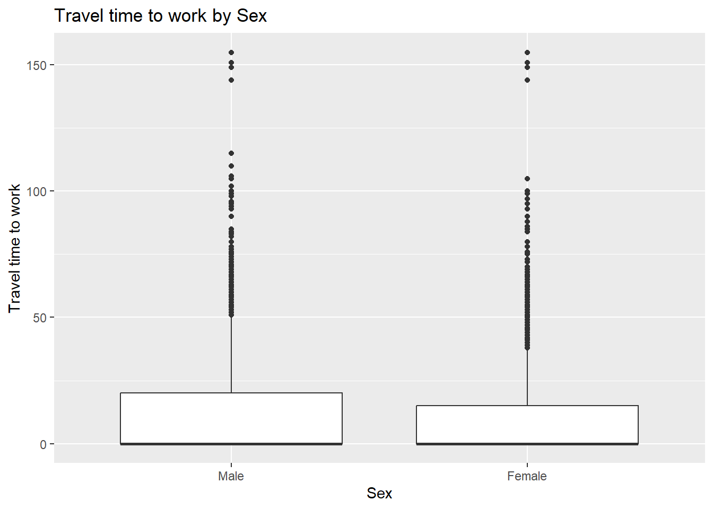
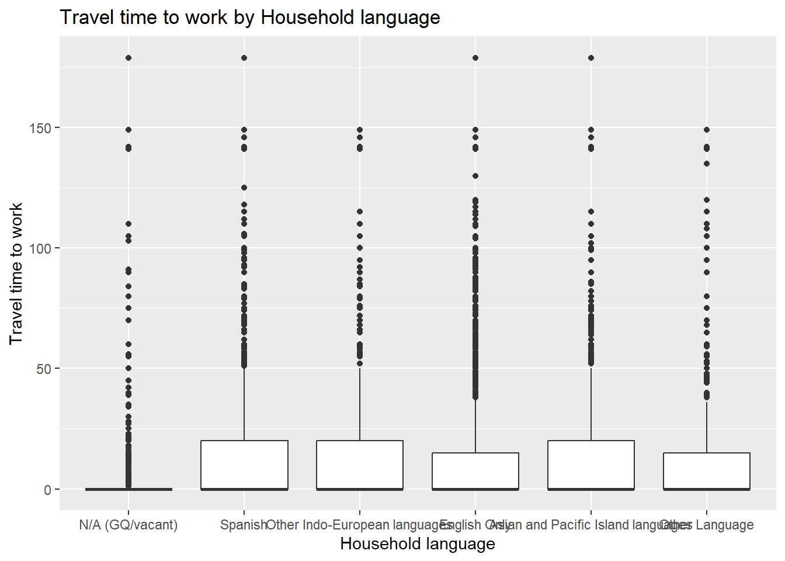
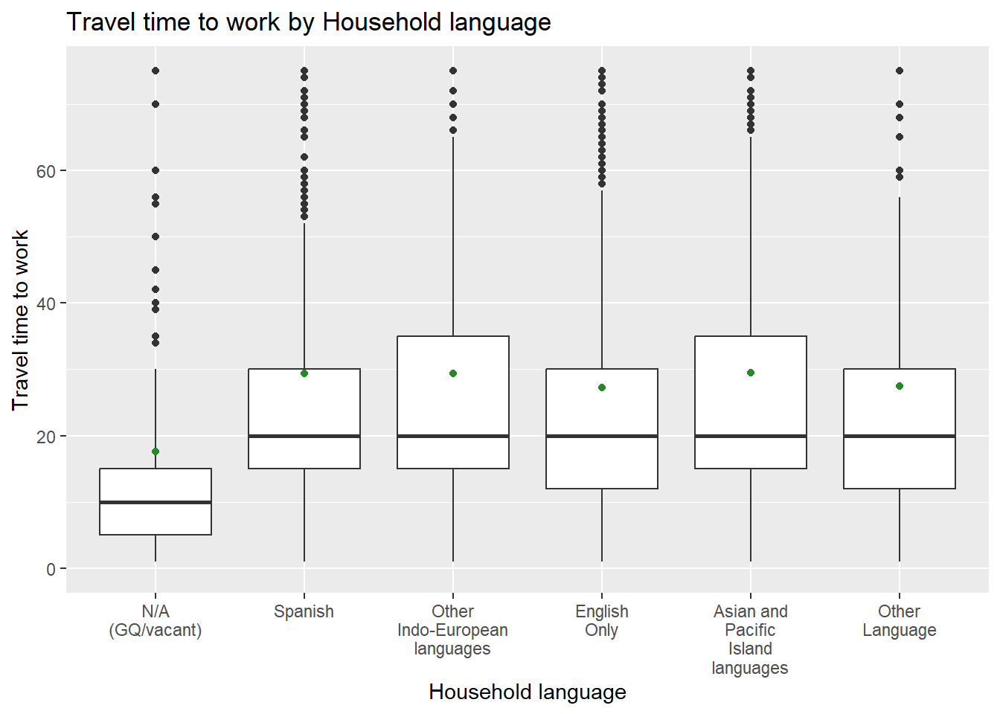
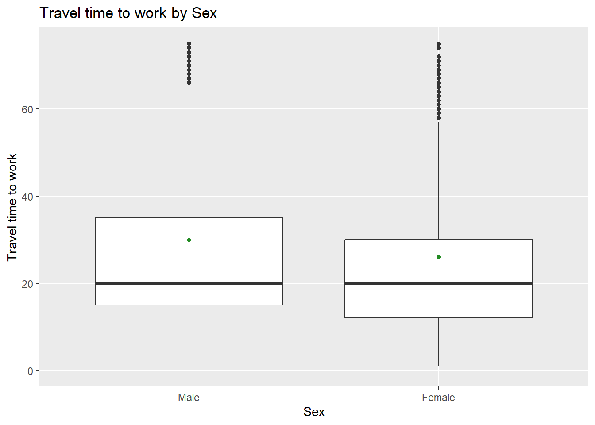

library(httr)
library(jsonlite)
library(tidyverse)
library(lubridate)
library(scales)
library(Hmisc)
APIkey <- "3e4e9dd9b93b8546b5de301ae8c11506545540b9"ST 558 Project 1
In this file, there will be a couple major tasks, split up into sections.
Part I will cover:
Querying the PUMS API
Writing to a .rds file
Creating helper functions to assist with data formatting and handling time values
Creating functions to more efficiently query the PUMS API
Part II will cover:
Writing functions for numeric and visual summarizing of PUMS data
Using those functions to investigate and find trends in the 2023 PUMS data
Setup
Loading in some packages I’ll need, as well as my API key
Part I: Data Processing
Parsing Variable Values
Variables Query Function
This function uses the PUMS API to pull in the list of census variables from a given year, as well as features of those variables (range, data type, etc.)
pums <- function(url){
## First, check year of URL to determine column names
if (grepl("2021|2022", url)){
print("2021-2")
colList <- c("AGEP", "GASP", "GRPIP", "JWAP", "JWDP", "JWMNP", "PWGTP", "FER",
"HHL", "SCH", "SCHL", "SEX", "ST", "REGION", "DIVISION")
} else {
print("2023-4")
colList <- c("AGEP", "GASP", "GRPIP", "JWAP", "JWDP", "JWMNP", "PWGTP", "FER",
"HHL", "SCH", "SCHL", "SEX", "STATE", "REGION", "DIVISION")
}
## Then, pull in variable info, parse to JSON, and return subsetted list
getJson <- GET(url)
parsed <- fromJSON(rawToChar(getJson$content))
vars <- as.list(parsed$variables)
varSubset <- vars[colList]
return(varSubset)
}Running pums() and saving results to .rds file in repository
data2021 <- pums("https://api.census.gov/data/2021/acs/acs1/pums/variables.json")
data2022 <- pums("https://api.census.gov/data/2022/acs/acs1/pums/variables.json")
data2023 <- pums("https://api.census.gov/data/2023/acs/acs1/pums/variables.json")
data2024 <- pums("https://api.census.gov/data/2024/acs/acs1/pums/variables.json")[1] "2021-2"
[1] "2021-2"
[1] "2023-4"
[1] "2023-4"saveRDS(list(pums2021 = data2021, pums2022 = data2022,
pums2023 = data2023, pums2024 = data2024), file = "data/pumsVars.rds")Parsing API Data
Functions
Function 1: Query to tibble (helper)
tibblehelper <- function(rawinput){
a <- fromJSON(rawToChar(rawinput$content))
as.data.frame(a[-1, , drop = FALSE], stringsAsFactors = FALSE) |>
setNames(a[1, ]) |>
as_tibble()
}Function 2: Time parsing (helper)
For this sub-section an LLM was used to assist in function writing.
time_calc <- function(label) {
'
This function will return either the midpoint of a provided time range.
If the provided label is missing a time, an NA time is returned
'
### Runs once per element
label <- as.character(label)
u <- unique(label)
mids <- map_dbl(u, function(x) {
if (is.na(x) || !str_detect(x, " to ")) return(NA_real_)
## Split time range into two values, make am/pm inidcators uniform
parts <- str_split_1(x, " to ") |>
str_replace_all("a\\.m\\.", "AM") |>
str_replace_all("p\\.m\\.", "PM")
## Parse each piece into date/time, check for NA here too
t <- parse_date_time(parts, orders = c("I:M p", "I p"), quiet = TRUE)
if (any(is.na(t))) return(NA_real_)
## Check if the interval goes past midnight, adjust accordingly
if (t[2] < t[1]) t[2] <- t[2] + days(1)
## Compute midpoint, and convert to proper format
mid <- t[1] + (t[2] - t[1]) / 2
as.numeric(difftime(mid, floor_date(t[1], "day"), units = "secs")) %% 86400
})
hms::as_hms(mids[match(label, u)])
}Big parsing function
This function will query the PUMS API, and allows a user to specify what variables they want to pull in. In addition, the user must supply an API key. Both tibblehelper() and time_calc() are used. The .rds file from earlier is used to pull in the proper variable values, and properly label the final tibble output.
pums2 <- function(year = 2024,
num_vars = c("AGEP", "PWGTP"),
cat_vars = "SEX",
geo_level = "state",
geo_value = "01",
API_key = "") {
levels_list <- readRDS("data/pumsVars.rds")
## Lists of acceptable column names
numlist <- c("AGEP", "GASP", "GRPIP", "JWAP", "JWDP", "JWMNP", "PWGTP")
catlist <- c("FER", "HHL", "SCH", "SCHL", "SEX")
num_vars <- union("PWGTP", num_vars)
### Check column names
if (!all(num_vars %in% numlist)) stop("Invalid numeric variable")
if (!all(cat_vars %in% catlist)) stop("Invalid categorical variable")
if (length(setdiff(num_vars, "PWGTP")) < 1)
stop("Need at least one numeric variable besides PWGTP")
if (length(cat_vars) < 1) stop("Need at least one categorical variable")
## Check for proper year
if (length(year) != 1 || !year %in% 2021:2024)
stop("Must provide a single year within 2021-2024")
## Check for API key
if (API_key == "")
stop("No API key provided")
## Check geography level
if (length(geo_level) != 1 || !geo_level %in% c("state", "division", "region"))
stop("geo_level must be state, division, or region")
## Check geo value, set geo_api based on geo_value input
if (length(geo_value) != 1) stop("geo_value must be a single value (or 'all')")
geo_api <- if (tolower(geo_value) == "all") "*" else geo_value
## Finally! Query time
querypull <- GET(paste0("https://api.census.gov/data/", year, "/acs/acs1/pums"),
query = list(get = paste(c(num_vars, cat_vars), collapse = ","),
`for` = paste0(geo_level, ":", geo_api),
key = API_key))
out <- tibblehelper(querypull)
## Separate numeric cols into plain numeric cols and time cols
## Applies as.numeric to the correct columns
plain_numbers <- intersect(num_vars, c("AGEP", "GASP", "GRPIP", "JWMNP", "PWGTP"))
out <- out |> mutate(across(all_of(plain_numbers), as.numeric))
## Time variables:
for (v in intersect(num_vars, c("JWAP", "JWDP"))) {
lk <- unlist(levels_list[[paste0("pums", year)]][[v]][["values"]][["item"]])
lab <- lk[match(as.integer(out[[v]]), as.integer(names(lk)))]
out[[v]] <- time_calc(unname(lab))
}
## Categorical variables -> factors with labels from the .rds
for (v in cat_vars) {
lv <- levels_list[[paste0("pums", as.character(year))]][[v]][["values"]][["item"]]
out[[v]] <- factor(out[[v]], levels = names(lv), labels = unname(lv))
}
class(out) <- c("census", class(out))
out
}Trying it out! More columns slows it down, but it works!
PUMS2022 <- pums2(year = 2022,
num_vars = c("AGEP", "JWDP", "PWGTP"),
cat_vars = c("SCHL", "SEX"),
geo_level = "state",
geo_value = "05",
API_key = APIkey)
PUMS2022# A tibble: 31,288 × 6
PWGTP AGEP JWDP SCHL SEX state
<dbl> <dbl> <time> <fct> <fct> <chr>
1 48 49 NA Regular high school diploma Male 05
2 49 19 NA Some college, but less than 1 year Female 05
3 59 21 NA Regular high school diploma Female 05
4 37 55 NA 1 or more years of college credit, no degree Male 05
5 22 60 NA <NA> Female 05
6 37 52 NA 1 or more years of college credit, no degree Male 05
7 38 25 NA Regular high school diploma Male 05
8 87 93 NA 1 or more years of college credit, no degree Female 05
9 50 38 NA GED or alternative credential Male 05
10 140 52 NA Associate's degree Female 05
# ℹ 31,278 more rowsCombining years
This function will loop pums2() over a list of years provided, producing a final tibble with data from multiple years.
combo <- function(years = c(2021:2024),
num_vars = c("AGEP", "PWGTP"),
cat_vars = "SEX",
geo_level = "state",
geo_value = "01",
API_key = ""){
## Initialize empty tibble
bigList <- tibble()
cat("year \t rows\n")
for (i in years){
temp <- pums2(year = i,
num_vars = num_vars,
cat_vars = cat_vars,
geo_level = geo_level,
geo_value = geo_value,
API_key = API_key)
## Add year column
temp <- temp |> add_column(YEAR = as.factor(i))
bigList <- bind_rows(bigList, temp)
## Print number of rows in each year
cat(i, "\t", nrow(temp), "\n")
}
class(bigList) <- c("census", class(bigList))
return(bigList)
}Testing it out - Functional! The “YEAR” column at the end is a factor, so I won’t have to take any extra steps to handle that later!
fourYears <- combo(years = c(2021: 2024),
num_vars = c("AGEP", "GASP", "GRPIP", "JWMNP", "PWGTP"),
catlist <- c("FER", "HHL", "SCH", "SCHL", "SEX"),
API_key = APIkey)year rows
2021 49647
2022 51580
2023 53020
2024 53710 fourYears# A tibble: 207,957 × 12
PWGTP AGEP GASP GRPIP JWMNP FER HHL SCH SCHL SEX state YEAR
<dbl> <dbl> <dbl> <dbl> <dbl> <fct> <fct> <fct> <fct> <fct> <chr> <fct>
1 13 85 3 0 0 N/A (less … N/A … No, … 1 or… Male 01 2021
2 51 67 3 0 0 N/A (less … N/A … No, … Regu… Fema… 01 2021
3 17 74 3 0 0 N/A (less … N/A … No, … 1 or… Male 01 2021
4 61 16 3 0 0 N/A (less … N/A … Yes,… Grad… Male 01 2021
5 15 83 3 0 0 N/A (less … N/A … No, … Regu… Male 01 2021
6 46 19 3 0 0 No N/A … Yes,… Some… Fema… 01 2021
7 55 36 3 0 0 N/A (less … N/A … No, … Regu… Male 01 2021
8 31 35 3 0 0 N/A (less … N/A … No, … Some… Male 01 2021
9 71 45 3 0 0 N/A (less … N/A … No, … Grad… Male 01 2021
10 48 20 3 0 5 N/A (less … N/A … Yes,… 1 or… Male 01 2021
# ℹ 207,947 more rowsPart II: Writing Generic Functions for Summarizing
Numeric Summaries
This function will take in the output from pums2() or combo(), and based on input arguments give you a list of variable summaries. This is an addition to the normal summary() function, which will only jump into action if the object you call summary() on is of data type “census”, which is assigned to outputs from the aforementioned PUMS query functions.
summary.census <- function(data,
num_vars = c("AGEP", "GASP", "GRPIP", "JWMNP"),
cat_vars = if("YEAR" %in% colnames(data))
c("FER", "HHL", "SCH", "SCHL", "SEX", "YEAR")
else c("FER", "HHL", "SCH", "SCHL", "SEX")){
## Read in the label list
label_list <- readRDS("data/pumsVars.rds")$pums2021
## Define the columns to calculate, based on double intersect of:
## cols in provided df,
## cols provided in num_vars / cat_vars
## list of all potential numeric & categorical variables
plain_numbers <- intersect(intersect(num_vars,
c("AGEP", "GASP", "GRPIP", "JWMNP")),
colnames(data))
cat_to_summarize <- intersect(intersect(cat_vars,
c("FER", "HHL", "SCH", "SCHL", "SEX", "YEAR")),
colnames(data))
## Initialize empty output list
out_list <- list()
## For numeric cols, create a tibble of each variable's mean & SD
## Then, append that tibble to out_list
## Pull column label from label list
for (var in plain_numbers){
name <- label_list[[var]][["label"]]
temp <- tibble(
mean = sum(data[var]*data["PWGTP"])/sum(data["PWGTP"]),
sd = sqrt(sum(data[var]^2*data["PWGTP"])/sum(data["PWGTP"])-mean^2))
out_list[[name]] <- temp
}
## For categorical cols, use dplyr to get counts for each response
## Append that tibble to out_list
## Pull column label from label list
for (var in cat_to_summarize){
## Year isn't in label list, this if() accounts for that
if (var == "YEAR"){
name <- "YEAR"
} else {
name <- label_list[[var]][["label"]]
}
## In the summary, the count must be properly weighted by PWGTP
## So by summing the PWGTP values you get the true total count
temp <- data |>
group_by(.data[[var]])|>
summarise(count = sum(PWGTP))
out_list[[name]] <- temp
}
return(out_list)
}Let’s test out the summary! In Rstudio it’s hard to interpret the output, but upon rendering to html it looks good!
summarized_list <- summary(fourYears)
summarized_list$Age
# A tibble: 1 × 2
mean sd
<dbl> <dbl>
1 39.8 23.5
$`Gas cost (monthly cost, use ADJHSG to adjust GASP to constant dollars)`
# A tibble: 1 × 2
mean sd
<dbl> <dbl>
1 43.6 109.
$`Gross rent as a percentage of household income past 12 months`
# A tibble: 1 × 2
mean sd
<dbl> <dbl>
1 8.60 20.6
$`Travel time to work`
# A tibble: 1 × 2
mean sd
<dbl> <dbl>
1 10.3 18.5
$`Gave birth to child within the past 12 months`
# A tibble: 3 × 2
FER count
<fct> <dbl>
1 N/A (less than 15 years/greater than 50 years/ male) 15619079
2 No 4513082
3 Yes 248179
$`Household language`
# A tibble: 6 × 2
HHL count
<fct> <dbl>
1 N/A (GQ/vacant) 545425
2 Spanish 1004644
3 Other Indo-European languages 277113
4 English Only 18183581
5 Asian and Pacific Island languages 257987
6 Other Language 111590
$`School enrollment`
# A tibble: 4 × 2
SCH count
<fct> <dbl>
1 N/A (less than 3 years old) 655286
2 Yes, private school or college or home school 805356
3 No, has not attended in the last 3 months 14860979
4 Yes, public school or public college 4058719
$`Educational attainment`
# A tibble: 17 × 2
SCHL count
<fct> <dbl>
1 Regular high school diploma 4208233
2 Professional degree beyond a bachelor's degree 245780
3 1 or more years of college credit, no degree 2460567
4 Master's degree 1155477
5 Grade 7 310831
6 Associate's degree 1383333
7 N/A (less than 3 years old) 655286
8 Bachelor's degree 2620555
9 Doctorate degree 184436
10 Grade 11 627883
11 GED or alternative credential 764359
12 Grade 9 487825
13 12th grade - no diploma 317940
14 Grade 10 545776
15 Grade 8 409249
16 Some college, but less than 1 year 1117456
17 <NA> 2885354
$Sex
# A tibble: 2 × 2
SEX count
<fct> <dbl>
1 Male 9871374
2 Female 10508966
$YEAR
# A tibble: 4 × 2
YEAR count
<fct> <dbl>
1 2021 5039877
2 2022 5074296
3 2023 5108468
4 2024 5157699Graphical Summaries
This function, like the last, is an addition to the normal plot() function, which only activates when something of data type “census” is provided. It recieves the census data, as well as the name of one numeric and one categorical column, and makes a ggplot() boxplot based on those arguments.
plot.census <- function(data, num_var, cat_var){
## Make sure both provided variables are in provided df
if (!(num_var %in% colnames(data)) || !(cat_var %in% colnames(data))){
stop("One or more provided variables not found in data")}
## Read in label list for final plot printing
label_list <- readRDS("data/pumsVars.rds")$pums2021
## Extract numeric and categorical labels from label_list
## Again, checking for YEAR specifically
num_name <- label_list[[num_var]][["label"]]
cat_name <- if(cat_var == "YEAR"){"Year"}
else{label_list[[cat_var]][["label"]]}
## Plotting, specifying weights (PWGTP) from census data, and axis titles from label_list
ggplot(data, aes(x = get(cat_var), y = get(num_var), weight = PWGTP))+
geom_boxplot()+
labs(title = paste0(num_name, " by ", cat_name),
x = cat_name,
y = num_name)
}Testing out plot()
plot(fourYears, "JWMNP", "SEX")
That looks alright! Because the function produces a ggplot object, I have the option to edit it further afterwards, which will happen below…
Investigation
Here, I am going to explore commute time in the “Pacific / West” division.
I’ll look at changes by home language and sex.
PUMS2023 <- pums2(year = 2023,
num_vars = c("AGEP", "JWMNP", "GASP"),
cat_vars = c("SEX", "HHL"),
geo_level = "division",
geo_value = "9",
API_key = APIkey)summary2023<- summary(PUMS2023,
num_vars = c("AGEP", "JWMNP", "GASP"),
cat_vars = c("HHL"))
commute_language_2023 <- plot(PUMS2023, "JWMNP", "HHL")
commute_sex_2023 <- plot(PUMS2023, "JWMNP", "SEX")
summary2023$Age
# A tibble: 1 × 2
mean sd
<dbl> <dbl>
1 39.3 22.9
$`Travel time to work`
# A tibble: 1 × 2
mean sd
<dbl> <dbl>
1 11.5 20.5
$`Gas cost (monthly cost, use ADJHSG to adjust GASP to constant dollars)`
# A tibble: 1 × 2
mean sd
<dbl> <dbl>
1 73.1 143.
$`Household language`
# A tibble: 6 × 2
HHL count
<fct> <dbl>
1 N/A (GQ/vacant) 1211999
2 Spanish 15112885
3 Other Indo-European languages 3098778
4 English Only 26755364
5 Asian and Pacific Island languages 6170558
6 Other Language 830391The HHL table shows us that the weighted mean travel time is ~11 minutes and 30 seconds, with a very high standard deviation of more than 20 minutes. We also see here that while more households are “English Only” than any other, there are a lot of primarily Spanish and Asian & Pacific Island-language households as well.
commute_language_2023
As a first look, these make sense. There are a lot of zeroes (anyone who doesn’t commute), and because of the hard limit at 0, this data is very skewed.
A couple issues with this plot (and potentially with the commute_sex_2023 plot not shown here):
- There are way too many zeroes to get a good idea of statistics among commuters
- The range of values is huge
- Some of the category names are a bit too long
- I would really like to have mean on the figure too
To deal with these issues, I am going to subset to only nonzero values, set a ylim() on the figure, and use label_wrap() on the category names. To get the group means, I’ll have to resort back to dplyr because the summary() function isn’t built to take in a grouping variable. Ill then add the mean values to the figure with geom_point().
weighted2023HHL <- PUMS2023 |>
filter(JWMNP>0)|>
group_by(HHL)|>
mutate(wmean = weighted.mean(JWMNP, PWGTP))commute_language_2023 <- plot(filter(PUMS2023,JWMNP > 0), "JWMNP", "HHL")
commute_language_2023+
scale_x_discrete(labels = scales::label_wrap(10))+
ylim(0, 75)+
geom_point(data = weighted2023HHL, aes(x = HHL, y = wmean),
color = "forestgreen")Warning: Removed 8310 rows containing non-finite outside the scale range
(`stat_boxplot()`).
That’s much better! It looks like median commute times are pretty standard between demographic groups (or at least this proxy for demographic group), but there is a little variation between group means.
Of note, it does deliver some warnings because some data is outside the set limits, but that is okay.
Now, looking at commute time by sex, I am going to enact some of the same fixes.
weighted2023SEX <- PUMS2023 |>
filter(JWMNP>0)|>
group_by(SEX)|>
mutate(wmean = weighted.mean(JWMNP, PWGTP))
commute_sex_2023 <- plot(filter(PUMS2023,JWMNP > 0), "JWMNP", "SEX")
commute_sex_2023+
ylim(0, 75)+
geom_point(data = weighted2023SEX, aes(x = SEX, y = wmean),
color = "forestgreen")Warning: Removed 8310 rows containing non-finite outside the scale range
(`stat_boxplot()`).
Here, we can see that on average, men have a slightly longer commute, but again the medians are pretty consistent. Of note, the whisker above the men’s boxplot extends ~10 minutes higher.
These plots and tables were pretty informative! Here it seems like on average, men have a slightly longer commute, but with a nearly identical overall commute time distribution to women. In addition, we see that of the three most common household language groups (English, Spanish, Asian & Pacific Island), on average, residents of Asian & Pacific Island -language households have slightly longer commutes.
It’s also interesting to see that all (non-NA) groups have the same median, at exactly 20 minutes! In my mind, this is a product of people rounding their own commute times, as opposed to it being a true representation. Survey participants with commutes between, let’s say 17-23 minutes are far more likely to just say “20 minutes” than provide their exact commute time, and that phenomenon produces the results we see above!
That’s all for Project 1!